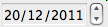

| Version: 2.9.4 |
#include </home/zeitlin/src/wx/github/interface/wx/datectrl.h>
 Inheritance diagram for wxDatePickerCtrl:
Inheritance diagram for wxDatePickerCtrl:This control allows the user to select a date.
Unlike wxCalendarCtrl, which is a relatively big control, wxDatePickerCtrl is implemented as a small window showing the currently selected date. The control can be edited using the keyboard, and can also display a popup window for more user-friendly date selection, depending on the styles used and the platform.
It is only available if wxUSE_DATEPICKCTRL is set to 1.
This class supports the following styles:
As can be seen from the remarks above, most of the control style are only supported in the native MSW implementation. In portable code it's recommended to use wxDP_DEFAULT style only, possibly combined with wxDP_SHOWCENTURY (this is also the style used by default if none is specified).
The following event handler macros redirect the events to member function handlers 'func' with prototypes like:
Event macros for events emitted by this class:
 |  |  |
| wxMSW appearance | wxGTK appearance | wxMac appearance |
Public Member Functions | |
| wxDatePickerCtrl () | |
| Default constructor. | |
| wxDatePickerCtrl (wxWindow *parent, wxWindowID id, const wxDateTime &dt=wxDefaultDateTime, const wxPoint &pos=wxDefaultPosition, const wxSize &size=wxDefaultSize, long style=wxDP_DEFAULT|wxDP_SHOWCENTURY, const wxValidator &validator=wxDefaultValidator, const wxString &name="datectrl") | |
| Initializes the object and calls Create() with all the parameters. | |
| bool | Create (wxWindow *parent, wxWindowID id, const wxDateTime &dt=wxDefaultDateTime, const wxPoint &pos=wxDefaultPosition, const wxSize &size=wxDefaultSize, long style=wxDP_DEFAULT|wxDP_SHOWCENTURY, const wxValidator &validator=wxDefaultValidator, const wxString &name="datectrl") |
| Create the control window. | |
| virtual bool | GetRange (wxDateTime *dt1, wxDateTime *dt2) const |
| If the control had been previously limited to a range of dates using SetRange(), returns the lower and upper bounds of this range. | |
| virtual wxDateTime | GetValue () const |
| Returns the currently entered date. | |
| virtual void | SetRange (const wxDateTime &dt1, const wxDateTime &dt2) |
| Sets the valid range for the date selection. | |
| virtual void | SetValue (const wxDateTime &dt) |
| Changes the current value of the control. | |
| wxDatePickerCtrl::wxDatePickerCtrl | ( | ) |
Default constructor.
| wxDatePickerCtrl::wxDatePickerCtrl | ( | wxWindow * | parent, |
| wxWindowID | id, | ||
| const wxDateTime & | dt = wxDefaultDateTime, |
||
| const wxPoint & | pos = wxDefaultPosition, |
||
| const wxSize & | size = wxDefaultSize, |
||
| long | style = wxDP_DEFAULT|wxDP_SHOWCENTURY, |
||
| const wxValidator & | validator = wxDefaultValidator, |
||
| const wxString & | name = "datectrl" |
||
| ) |
Initializes the object and calls Create() with all the parameters.
| bool wxDatePickerCtrl::Create | ( | wxWindow * | parent, |
| wxWindowID | id, | ||
| const wxDateTime & | dt = wxDefaultDateTime, |
||
| const wxPoint & | pos = wxDefaultPosition, |
||
| const wxSize & | size = wxDefaultSize, |
||
| long | style = wxDP_DEFAULT|wxDP_SHOWCENTURY, |
||
| const wxValidator & | validator = wxDefaultValidator, |
||
| const wxString & | name = "datectrl" |
||
| ) |
Create the control window.
This method should only be used for objects created using default constructor.
| parent | Parent window, must not be non-NULL. |
| id | The identifier for the control. |
| dt | The initial value of the control, if an invalid date (such as the default value) is used, the control is set to today. |
| pos | Initial position. |
| size | Initial size. If left at default value, the control chooses its own best size by using the height approximately equal to a text control and width large enough to show the date string fully. |
| style | The window style, see the description of the styles in the class documentation. |
| validator | Validator which can be used for additional date checks. |
| name | Control name. |
| virtual bool wxDatePickerCtrl::GetRange | ( | wxDateTime * | dt1, |
| wxDateTime * | dt2 | ||
| ) | const [virtual] |
If the control had been previously limited to a range of dates using SetRange(), returns the lower and upper bounds of this range.
If no range is set (or only one of the bounds is set), dt1 and/or dt2 are set to be invalid.
Notice that when using a native MSW implementation of this control the lower range is always set, even if SetRange() hadn't been called explicitly, as the native control only supports dates later than year 1601.
| dt1 | Pointer to the object which receives the lower range limit or becomes invalid if it is not set. May be NULL if the caller is not interested in lower limit. |
| dt2 | Same as above but for the upper limit. |
| virtual wxDateTime wxDatePickerCtrl::GetValue | ( | ) | const [virtual] |
Returns the currently entered date.
For a control with wxDP_ALLOWNONE style the returned value may be invalid if no date is entered, otherwise it is always valid.
| virtual void wxDatePickerCtrl::SetRange | ( | const wxDateTime & | dt1, |
| const wxDateTime & | dt2 | ||
| ) | [virtual] |
Sets the valid range for the date selection.
If dt1 is valid, it becomes the earliest date (inclusive) accepted by the control. If dt2 is valid, it becomes the latest possible date.
| virtual void wxDatePickerCtrl::SetValue | ( | const wxDateTime & | dt | ) | [virtual] |
Changes the current value of the control.
The date should be valid unless the control was created with wxDP_ALLOWNONE style and included in the currently selected range, if any.
Calling this method does not result in a date change event.